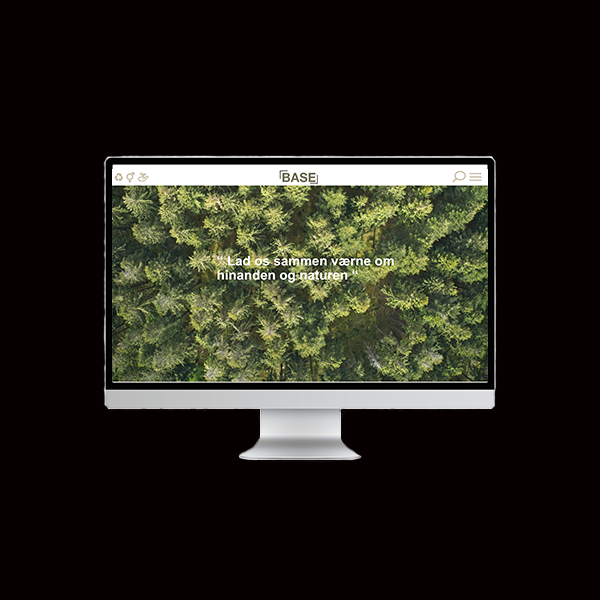
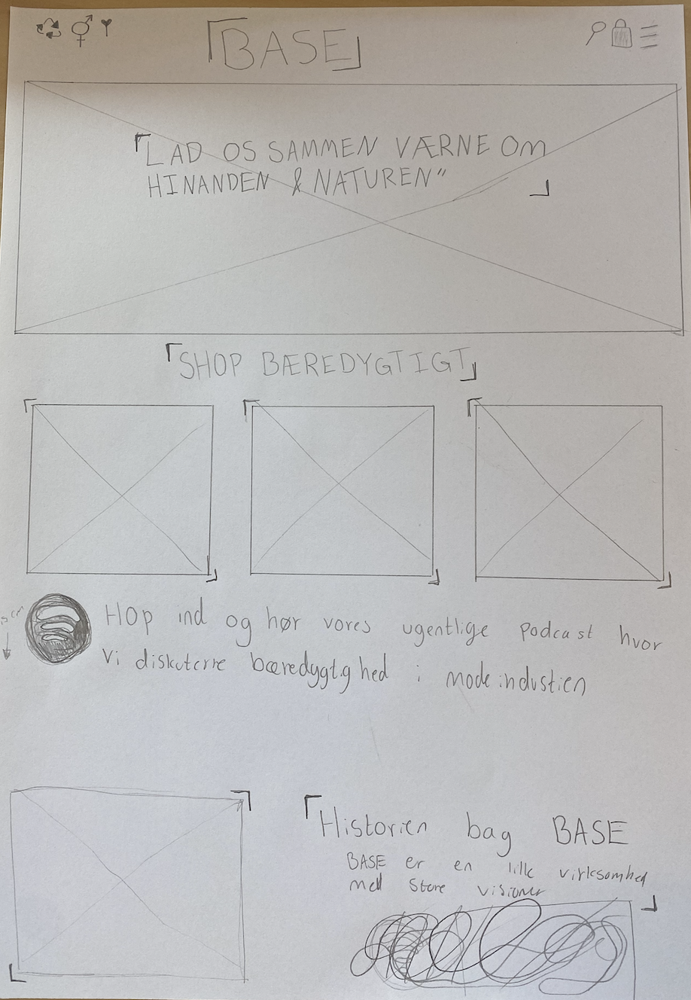
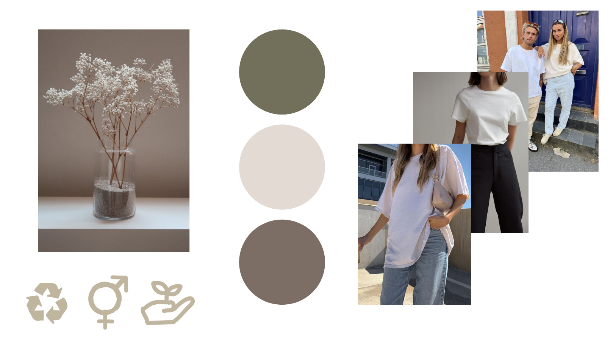
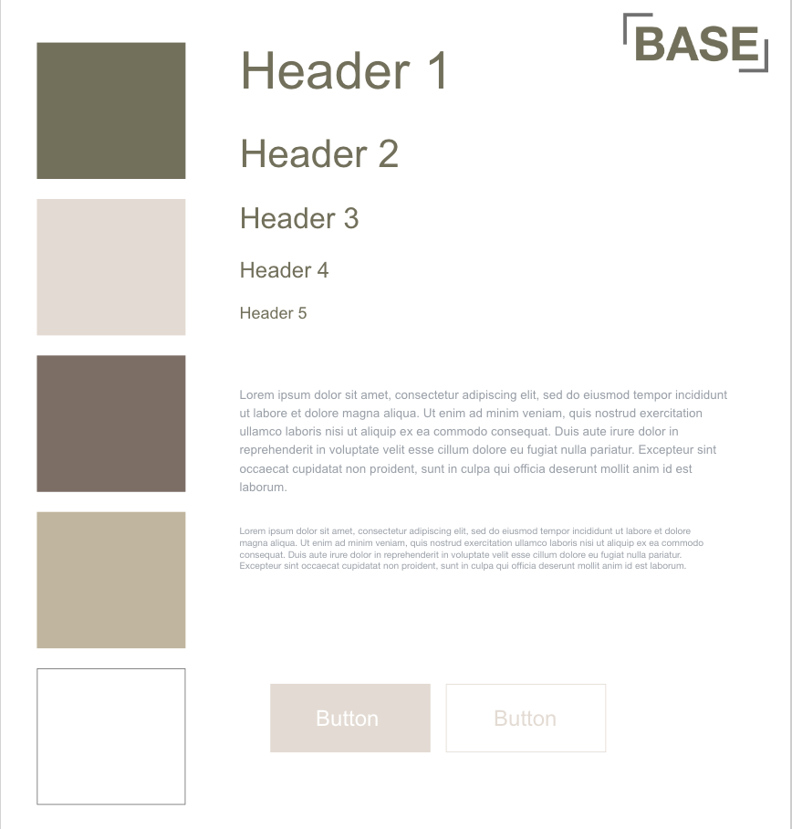

Ux løsning

I dette forløb var målet at lave en velfungerende ux demo af et website. Her brugte jeg lang tid på designet og det udtryk jeg gerne ville have websitet til at have. Så de passede til den målgruppe jeg havde fundet frem til, ud fra min research. Vi lavede også nogle forskellige test af vores færdige designs som var med til at give, en bedre fornemmelse af hvordan en bruger ser på ens design. Det er klart noget jeg vil tage med videre til andre projekter.
Proccesdokumentation
skitse

Moodboard
Styletile
